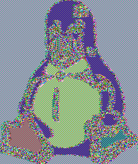

Department of Electrical Engineering, IIT Bombay
August 9, 2024
Computational Secrecy: Weaker notion of secrecy
Perfect secrecy requirement
Computational secrecy requirement
In general, computational security definitions incorporate two relaxations
Security is only guaranteed against realistic adversaries that run for some feasible amount of time
Adversaries can potentially succeed with some very small probability
Precise definitions of the above relaxations are needed
Two approaches: concrete and asymptotic
Upper bounds the success probability of an adversary running for some specified time
A concrete definition of security takes the following form
A scheme is (t,\epsilon)\textsf{-secure} if any adversary running for time at most t succeeds in breaking the scheme with probability at most \epsilon.
Example: A (200 years, 2^{-60})-secure scheme would guarantee that no adversary running for at most 200 years can break the scheme with probability better than 2^{-60}
More convenient to measure running time in terms of CPU cycles, as in (2^{80} cycles, 2^{-60})
Realistic adversaries are modeled by probabilistic algorithms running in time polynomial in n
An algorithm A runs in polynomial time if there exists a polynomial p such that, for every input x \in \{0,1\}^*, the computation of A(x) terminates within at most p(|x|) steps where |x| denotes the length of x
An algorithm with polynomial running time is said to be efficient
Composition of efficient algorithms is efficient
Algorithms having access to a sequence of unbiased, independent random bits
Random bits can be represented as r \leftarrow \{0,1\}^*
An algorithm A runs in polynomial time if there exists a polynomial p such that, for every input x \in \{0,1\}^* and r \leftarrow \{0,1\}^*, the computation of A(x,r) terminates within at most p(|x| +|r|) steps
Small probabilities of success are modeled by probabilities smaller than any inverse polynomial in n
Definition: A function f from the natural numbers to the non-negative real numbers is negligible if for every positive polynomial p there is an N such that for all integers n > N it holds that f(n) < \frac{1}{p(n)}.
Examples: 2^{-n}, 2^{-\sqrt{n}}, n^{-\log n}
An arbitrary negligible function is denoted by \textsf{negl}
Both PPT adversaries and negligible probabilities of success are needed to allow practical encryption schemes
Consider private-key encryption where |\mathcal{K}| < |\mathcal{M}|
Two attacks are always applicable
Setting |\mathcal{K}| large enough avoids these attacks
A private-key encryption scheme is a triple of PPT algorithms (\textsf{Gen}, \textsf{Enc}, \textsf{Dec}) such that:
For every m, c, k, we have \textsf{Dec}_k\left( \textsf{Enc}_k\left( m \right) \right) = m
A private-key encryption scheme \Pi = (\textsf{Gen}, \textsf{Enc}, \textsf{Dec}) has indistinguishable encryptions in the presence of an eavesdropper, or is EAV-secure, if for all PPT adversaries \mathcal{A} there is a negligible function \textsf{negl} such that, for all n, \Pr\left[ \textsf{PrivK}^{\textsf{eav}}_{\mathcal{A},\Pi}(n) = 1\right] \le \frac{1}{2} + \textsf{negl}(n).
An perfectly secure scheme is also EAV-secure
A pseudorandom generator is a polynomial-time deterministic algorithm for transforming a short, uniform bitstring called the seed into a longer, “uniform-looking” output string.
Pseudorandomness is a property of a distribution on strings
Some desirable properties of a pseudorandom generator:
Let l be a polynomial and let G be a deterministic polynomial-time algorithm such that for any n and s \in \{0,1\}^n, we have |G(s)| = l(n)
G is a pseudorandom generator if the following conditions hold:
the first probability is taken over uniform choice of s \in \{0,1\}^n and the randomness of D
the second probability is taken over uniform choice of r \in \{0,1\}^{l(n)} and the randomness of D.
We call l the expansion factor of G.
Stream ciphers are practical systems which behave like pseudorandom generator
Example: A5/1
D is given a string w \in \{0,1\}^{l(n)}
If \mathcal{A} succeeds, D decides that w is a pseudorandom string and if \mathcal{A} fails D decides w is a random string.
A private-key encryption scheme \Pi = (\textsf{Gen}, \textsf{Enc}, \textsf{Dec}) has indistinguishable multiple encryptions in the presence of an eavesdropper if for all PPT adversaries \mathcal{A} there is a negligible function \textsf{negl} such that, \Pr\left[ \textsf{PrivK}^{\textsf{mult}}_{\mathcal{A},\Pi}(n) = 1\right] \le \frac{1}{2} + \textsf{negl}(n).
The one-time pad does not have indistinguishable multiple encryptions in the presence of an eavesdropper
Adversary can influence the honest parties sharing the key to encrypt messages of its choice and send it over the public channel
Chosen-plaintext attacks in the real world
How can we model such an adversary?
Let F be an efficient, length-preserving, keyed function. F is a pseudorandom function if for all PPT distinguishers D, there is a negligible function \textsf{negl} such that: \begin{align*} & \bigg| \Pr\left[ D^{F_k(\cdot)}(1^n) = 1 \right] - \Pr\left[ D^{f(\cdot)}(1^n) = 1 \right]\bigg| \\ & \quad\quad\quad\quad \le \textsf{negl}(n), \end{align*} where
the first probability is taken over uniform choice of k \in \{0,1\}^n and the randomness of D, and
the second probability is taken over uniform choice of f \in \textsf{Func}_n and the randomness of D
Theorem: If F is a pseudorandom function, then the above construction is a CPA-secure private-key encryption scheme for messages of length n
Security Proof Overview
D is given 1^n and access to an oracle \mathcal{O}: \{0,1\}^n \rightarrow \{0,1\}^n. It uses \mathcal{A} as a subroutine
Whenever \mathcal{A} queries the encryption oracle on message m\in \{0,1\}^n, answer as follows
When \mathcal{A} outputs messages m_0, m_1 \in \{0,1\}^n, choose a uniform bit b \in \{0,1\} and then
Let \textsf{repeat} denote the event that r^* was used by the oracle to answer at least one of \mathcal{A}’s queries
Let \textsf{repeat}^c be the complement of \textsf{repeat}. Then we have \begin{align*} & \Pr\left[ \textsf{PrivK}_{\mathcal{A}, \widetilde{\Pi}}^{\textsf{cpa}}(n) = 1 \right] \\ & = \Pr\left[ \textsf{PrivK}_{\mathcal{A}, \widetilde{\Pi}}^{\textsf{cpa}}(n) = 1 \bigcap \textsf{repeat}\right] \\ & \quad + \Pr\left[ \textsf{PrivK}_{\mathcal{A}, \widetilde{\Pi}}^{\textsf{cpa}}(n) = 1 \bigcap \textsf{repeat}^c\right] \\ & \le \frac{q(n)}{2^n} + \frac{1}{2}. \end{align*}
Finally, we have \Pr\left[ \textsf{PrivK}_{\mathcal{A}, \Pi}^{\textsf{cpa}}(n) = 1 \right] \le \frac{1}{2} + \frac{q(n)}{2^n} + \textsf{negl}(n)
A pseudorandom permutation is a permutation which cannot be efficiently distinguished from a random permutation
Let F be an efficient, length-preserving, keyed permutation. F is a pseudorandom permutation if for all PPT distinguishers D, there is a negligible function \textsf{negl} such that: \begin{align*} & \bigg| \Pr\left[ D^{F_k(\cdot)}(1^n) = 1 \right] - \Pr\left[ D^{f(\cdot)}(1^n) = 1 \right]\bigg| \\ & \quad\quad\quad\quad \le \textsf{negl}(n), \end{align*} where
the first probability is taken over uniform choice of k \in \{0,1\}^n and the randomness of D, and
the second probability is taken over uniform choice of f \in \textsf{Perm}_n and the randomness of D
A strong pseudorandom permutation is a permutation which cannot be efficiently distinguished from a random permutation even if the distinguisher is given oracle access to the inverse of the permutation
In practice, constructions of strong pseudorandom permutations are called block ciphers
Let F be an efficient, length-preserving, keyed permutation. F is a strong pseudorandom permutation if for all PPT distinguishers D, there is a negligible function \textsf{negl} such that: \begin{align*} & \bigg| \Pr\left[ D^{F_k(\cdot),F_k^{-1}(\cdot)}(1^n) = 1 \right] \\ &\quad\quad - \Pr\left[ D^{f(\cdot),f^{-1}(\cdot)}(1^n) = 1 \right]\bigg| \\ & \quad\quad\quad\quad \le \textsf{negl}(n), \end{align*} where
the first probability is taken over uniform choice of k \in \{0,1\}^n and the randomness of D, and
the second probability is taken over uniform choice of f \in \textsf{Perm}_n and the randomness of D
Insecure: Should not be used in practice!
Let \vec{m} = \langle m_1,m_2,\ldots,m_l\rangle where m_i \in \{0,1\}^n.
Let F be a block cipher with block length n.
\vec{c} \coloneqq \langle F_k(m_1), F_k(m_2),\ldots,F_k(m_l) \rangle
ECB is deterministic and cannot be CPA-secure.

Image encrypted using ECB mode1
Let m = m_1,m_2,\ldots,m_l where m_i \in \{0,1\}^n.
Let F be a length-preserving block cipher with block length n.
A uniform initialization vector (IV) of length n is chosen.
c_0 = IV. For i = 1,\ldots,l, c_i \coloneqq F_k(c_{i-1}\oplus m_i)
For i = 1,2,\ldots,l, m_i \coloneqq F_k^{-1}(c_i)\oplus c_{i-1}.
Ciphertext is larger than the plaintext by n bits
Decryption is faster than encryption
If F is a pseudorandom permutation, then the CBC-mode encryption is CPA-secure.
Let \vec{m} = m_1,m_2,\ldots,m_l where m_i \in \{0,1\}^n
Let F be a length-preserving block cipher with length n
To encrypt a message of length l < 2^{n/4} blocks, a uniform IV of length 3n/4 is chosen
c_0 = IV. For i = 1,\ldots,l, c_i \coloneqq F_k(IV \| i) \oplus m_i.
For i = 1,2,\ldots,l, m_i \coloneqq F_k(IV \| i)\oplus c_{i}.
Ciphertext is larger than the plaintext by 3n/4 bits
Both encryption and decryption can be parallelized
The generated stream can be truncated to exactly the plaintext length
F does not need to be a permutation
If F is a pseudorandom function, then the CTR-mode encryption is CPA-secure.
Chapter 3 from Katz & Lindell